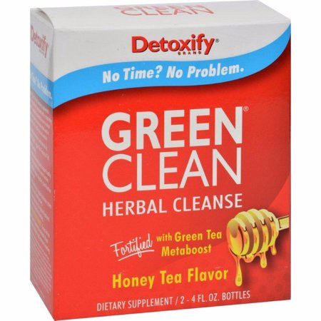

Detox / Cleanses
DETOXIFY GREEN CLEAN
You can enjoy a healthier, cleaner body with Detoxify Green Clean. Green Clean is the herbal cleansing detox drink concentrate used by people just like you. They cleansed their systems of toxins and impurities with Green Clean, and so can you.
PRODUCT INFO
- Detoxify Green Clean is the way to help lower the impurities your body absorbs every day. Pick your day for using your Green Clean for intensive cleansing.
- Begin your cleansing program with Green Clean.
- Shake the Green Clean Cleansing Blend well and drink entire contents of the bottle. Next, shake Green Clean Green Tea Metaboost well and drink entire contents of bottle.
- It is permissible to mix both Green Clean bottles with up to 16oz of water.
- Wait 15 minutes. Drink 32oz of water.
- Continue to drink plenty of water throughout the day to extend your cleansing program for hours.
- Urinate frequently. Frequent urination indicates that you are experiencing optimal cleansing with Green Clean.
ADDITIONAL INFORMATION
- Green Clean is intended for periodic intensive cleansing that is a part of an ongoing cleansing routine.
- For best results, use Detoxify’s PreCleansing products for 2 days prior to using Green Clean.
- For optimal cleansing and health, take Detoxify Constant Cleanse every day with six 16oz glasses of water.
- Eat light meals, including fruits, vegetables, and fiber during your cleansing program.
PREGNANT OR BREASTFEEDING WOMEN SHOULD CONSULT THEIR PHYSICIAN BEFORE USING THIS PRODUCT. Green Clean is not intended for children.
DOES GREEN CLEAN WORK?
With its powerful ingredients, Detoxify Green Clean is the most powerful detox drink concentrate on the market today. It has been effective for people who are committed to cleansing. Simply follow Green Clean’s guidelines for intensive cleansing and the Green Clean directions, and you will experience optimal cleansing.
DETOXIFY GREEN CLEAN INGREDIENTS
Each 8oz Green Clean detox drink contains our proprietary herbal blend. Green Clean also includes:
- Vitamin A
- Vitamin C
- Vitamin D
- Thiamin
- Riboflavin
- Niacin
- Vitamin B6
- Folate
- Vitamin B12
- Biotin
- Pantothenic Acid
- Calcium
- Magnesium
- Zinc
- Selenium
- Manganese
- Chromium
- Potassium
- Creatine Monohydrate
GREEN CLEAN’S EXCLUSIVE HERBAL FORMULA IS:
- Nettle — Acts as a diuretic in Green Clean to help release toxins from the body.
- Ginseng — Traditionally used to boost the immune, cardiovascular and metabolic systems.
- Dandelion — Herbalists use this potent herb to support healthy liver and gallbladder function.
- Hawthorne Berry — Used in Green Clean, as it has been for centuries, to support the heart and cardiovascular system.
- Milk Thistle — Included in Green Clean to restore healthy liver function and minimize toxin damage.
- Uva Ursi — In Green Clean to promote kidney and urinary health.
- Mullein Leaf — Acts as a tonic in Green Clean to support the respiratory system and lungs.
- Stevia — A powerful cleansing herb in Green Clean used by herbalists since ancient times.
- Fruit Fiber — Effective in Green Clean for binding toxins and helping to eliminate them through the digestive tract.
- Green Tea Metaboost — Green Clean contains green tea extract which has been clinically proven to boost the metabolism and enhance rapid intensive cleansing.
MORE INFORMATION ON YOUR GREEN CLEAN DETOX DRINK
Detoxify Brand herbal cleansing supplements have been specifically formulated with a proprietary blend of ingredients proven to reduce toxins and impurities in the body when used in conjunction with a healthy diet and exercise.
The herbs, fiber, vitamins and minerals in Green Clean support the 4 Factors of Full System Cleansing™:
- Diuretic and cleansing herbs support healthy liver, kidney and urinary system function.
- Fruit fiber supports digestive system function and health.
- Heart health herbs support circulatory system function and blood cleansing.
- Vitamins and minerals replenish nutrients lost during intensive cleansing.
Plus Green Tea Metaboost: Green tea has been shown to provide the metabolic boost necessary to achieve rapid intensive cleansing.
These statements have not been evaluated by the Food and Drug Administration. This product is not intended to diagnose, treat, cure or prevent any disease. Except as stated here, Detoxify disclaims any and all representations, expressed or implied, concerning the manufacturing, use, or performance of its products made by any third party. Detoxify notifies all distributors, retailers, and consumers of its products that all disclaimed representations are unauthorized, wrongful and false, and in certain jurisdictions may be unlawful.
RETURN & REFUND POLICY
All Sales are FINAL !
SHIPPING INFO
I'm a shipping policy. I'm a great place to add more information about your shipping methods, packaging and cost. Providing straightforward information about your shipping policy is a great way to build trust and reassure your customers that they can buy from you with confidence.